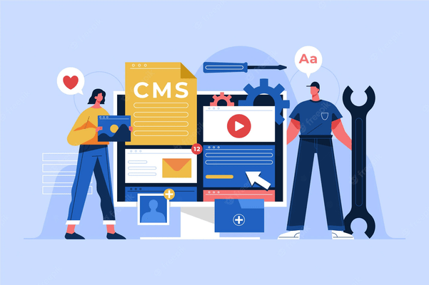
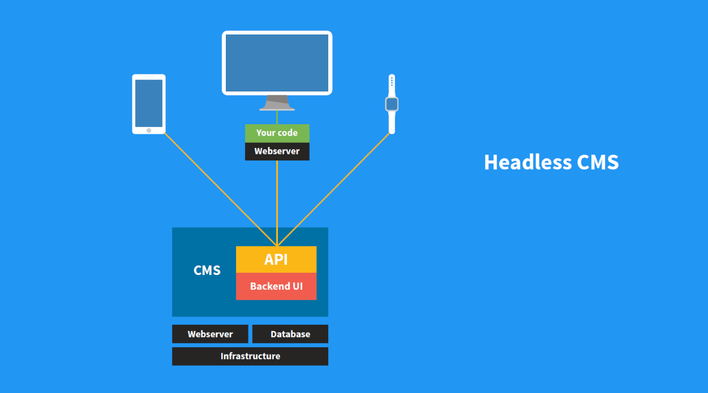
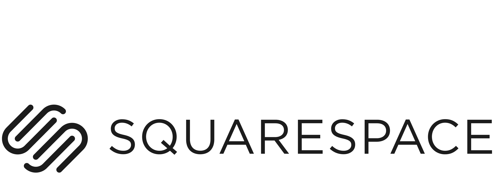

CMS
Seamless CMS er en tradisjonell content management system. Den kombinerer presentasjon av innhold og innholdet til et system.
Det gjør det enkelt å opprettholde, og publisere nytt innhold uten behov for programmeringskunnskap.
Ulempen med seamless cms er at innholdet blir låst til en plattform, og er derfor ikke gjenbrukbar skulle du ønske å dele innholdet
til andre plattformer enn web. Det er også vanskelig å bytte verktøyene som brukes til å forme innholdet.

Headless CMS
Headless CMS, er en ny type content management system. I motsetning til seamless, så blir backend og frontend
to forskjellige systemer. Headless cms har i oppgave å holde og dele innholdet, uten å tenke på hvordan det
skal presenteres. Det gjør det mulig å levere innholdet til flere plattformer gjennom en API. Fordelene er at
headless sikrer gjenbruk av innholdet, siden du enkelt kan bytte medier du gir innholdet til. Du får lov til å
presentere innholdet slik du vil, og nettsiden vil generelt sett være sikrere mot hacking, fordi innholdet er
separat fra presentasjonsmediet. Ulempen er at headless krever mer programmeringskunnskap å få til, fordi den som
oftest ikke presenterer innholdet imens du lager det.
Wordpress
Wordpress er en opensource seamless cms. Den har størst mengde brukere av alle CMS,
og står for 43% av alle websider laget på nett. Du finner over ti tusen ferdigmaler å velge mellom,
og det er mange utviklere som bidrar med nye utvidelser og maler daglig. Ulempen med denne populariteten,
er at den er et stort mål for hacking. Du må passe på hvilke utvidelser du installerer,
etter som at hvem som helst kan utvikle utvidelser. Wordpress tilbyr også en betalt versjon,
som har profesjonell support tilgjengelig døgnet rundt.

Squarespace
Squarespace er en closed source seamless cms. De har mange ferdigmaler, og noen utvidelser å velge mellom.
De har ikke like mange utvidelser som Wordpress, ettersom at de manuelt godkjenner hvilke plugins som
blir støttet. Fordelen med denne formen for kontroll, er at utvidelsene generelt sett er sikrere å bruke.
Du må abonnere for å bruke Squarespace, men til gjengjeld får du mer støtte dersom du møter på problemer.
Fordeler
Ulemper
Likheter / Ulikheter
Open Source
Flere kan utvikle utvidelser og ferdigmaler til programmet.
Er gratis, åpen for alle
Har du ferdigheter kan du bygge om programmet til å bare innholde det du trenger.
Sikkerhet er en bekymring, ettersom at hvem som helst får lov til å skape utvidelser
Kvaliteten på utvidelsene og ferdigmalene kan ha stor variasjon
Enkel å bruke, trenger ikke å kunne programmering
Har mange utvidelser til mer funksjonalitet
Kommer med en integrert søkemotor som gjør det enkelt å navigere din side.
Proprietære
Utvidelsene blir godkjent av offesielle utviklere, gjør det mer sikkert å bruke.
Du får ikke tilgang til backend, så du er begrenset i utvidelser du kan lage.
Enkel å bruke, trenger ikke å kunne programmering
Har mange utvidelser til mer funksjonalitet
Kommer med en integrert søkemotor som gjør det enkelt å navigere din side.
Spesielle
CMS har ingen bloatware, den er spisset inn mot formålet.
Har lite til ingen ekstra funksjonalitet utenfor formålet.
Enkel å bruke, trenger ikke å kunne programmering
Har ikke like mye funksjonalitet, som de andre typene CMS.